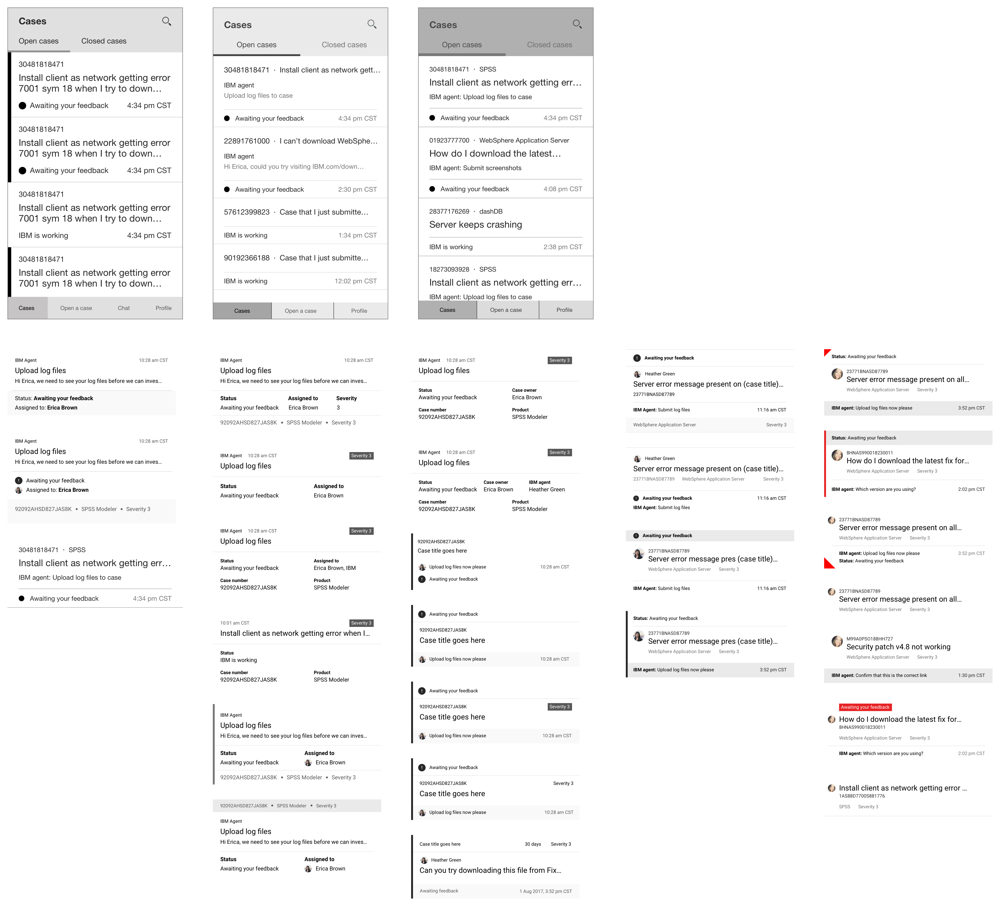
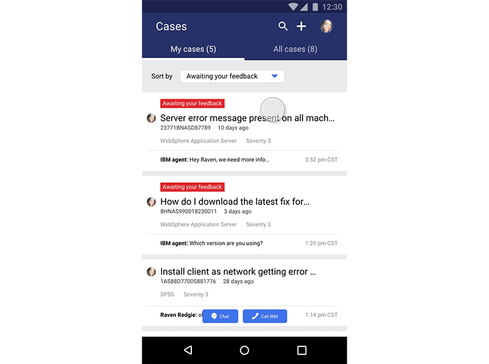
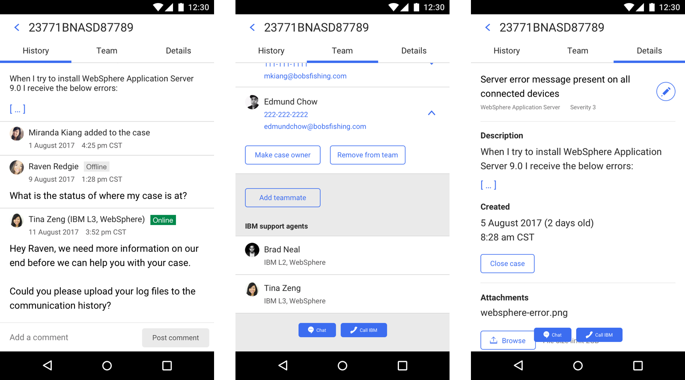

IBM Support Mobile Application
The IBM Support mobile application is a parallel work stream to the web platform. The app is a collection of several Support areas, like the product documentation community, warranty lookup, and case management.
Overview
Problem
The app was originally built to consolidate multiple Support tools into a central place to prevent different groups within IBM from creating one-off apps. However, this resulted in an app that was trying to accommodate too much and not serving any one objective well.
Vision
With this year’s initiative to prioritize the customer support experience, we have been able to drastically scope down the app and focus in on a core user task: case management. Users who would download this app want to see which cases need their attention and respond, stay informed with cases across their team, and open a case quickly.
Role and team
I am a product designer leading user experience, visual, and interaction design across this project.
I also work with my design lead, product owner, and two developers.
The case feed
The landing view of the app is the case feed. Users also want to easily communicate with support agents so we made “chat” and “call” global navigation actions.
Cases are organized into two groups: open cases that the logged-in users owns and open cases that people on their team own. Closed cases would show up if it had been closed within the last 30 days.
Case cards
The cards in the case feed went through multiple iterations. The data shown on the cards was informed by what we chose to display on the cases table in the web platform. However, an ongoing challenge I kept running into was the information hierarchy. Several pieces of information seemed to have the same level of importance for a user’s ability to identify, scan, and understand each case at this view:
- Status
- Case title
- Case number
- Product
- Severity
- Last update

Ultimately, prioritization of information all came back down to what users need to know at this view: are there cases that need my attention? If so, which ones?
The two data points that communicated this the strongest were the status and the title. A case could have one of four statuses:
- New case opened
- Awaiting your feedback
- IBM is working
- Resolution provided—case closed
In the mobile app, the only status that was meaningful enough to display on the case feed was “awaiting your feedback”. Therefore, a design decision we made here was to only display a status on the card when the case was waiting for the user to take an action.

Viewing an individual case
When users view a case on the web platform, they are taken to the case details page. With the mobile app, we brainstormed ways to break apart the information on that page in a way that made sense in this context. Like the case cards, organization was driven by what users needed.

History
Since responding to cases is one of the main tasks in the app, we made case history the landing view. Case history contains the same information a user would see on the web platform.
Teams
The idea of teams came up frequently with our sponsor user sessions. Users will frequently work with teammates on the same case and need to include a teammate on that case. This is similar to carbon copies on emails. Users have also expressed wanting to know which IBM agents are involved with their case.
Details
Case details contains additional information about the case. It includes all of the information a user sees on the initial case card, along with secondary information like the description, date created, and list of attachments.